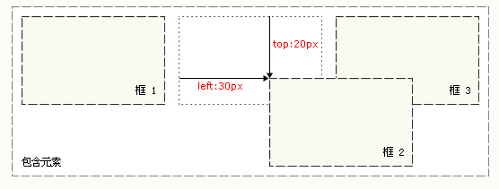
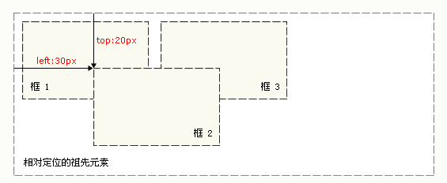
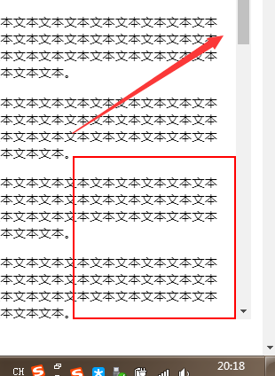
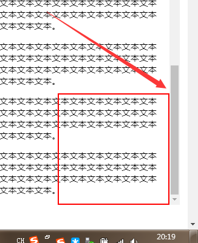

目录
1.背景介绍
2.知识剖析
3.常见问题
4.解决方案
5.编码实战
6.扩展思考
7.参考文献
8.更多讨论
position 属性规定元素的定位类型。
这个属性定义建立元素布局所用的定位机制。任何元素都可以定位.
position的属性值默认值：static（默认）
常用值relative（相对）、absolute（绝对）、fixed（固定）
不常用的：inherit（从父元素继承position的值）、sticky（粘性定位）、initial、unset、revert
static
默认值。没有定位，元素出现在正常的流中（忽略 top, bottom, left, right 或者 z-index 声明）。
relative相对定位
不脱离文档流。设置为相对定位的元素框会偏移某个距离。元素仍然保持其未定位前的形状，它原本所占的空间仍保留。
absolute绝对定位
脱离文档流。然后使用left、right、top、bottom属性相对于其最接近的一个具有定位属性的父包含块进行绝对定位。如果不存在这样的包含块，则相对于HTML元素定位。

fixed固定定位
脱离文档流。与absolute定位类型类似，但它的相对移动的坐标是视图（屏幕内的网页窗口）本身。它不会随浏览器窗口的滚动条滚动而变化.
 position各种的定位参考点
relative：相对于初始位置
absolute:相对于具有“定位属性的祖先元素”
fixed：相对于浏览器视窗。
话不多说
我来演示一下
子绝父相布局为什么要“子绝父相”
感谢大家观看
By 刘仁瑞